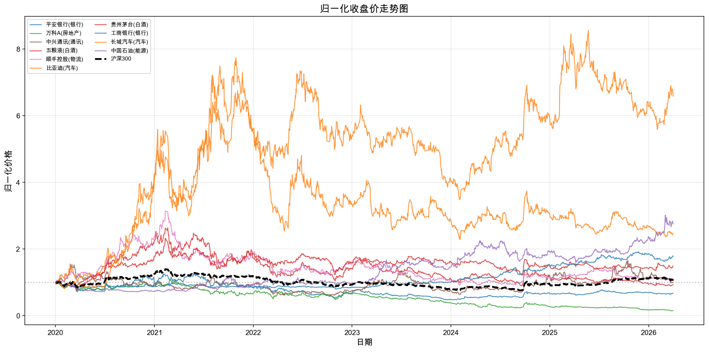
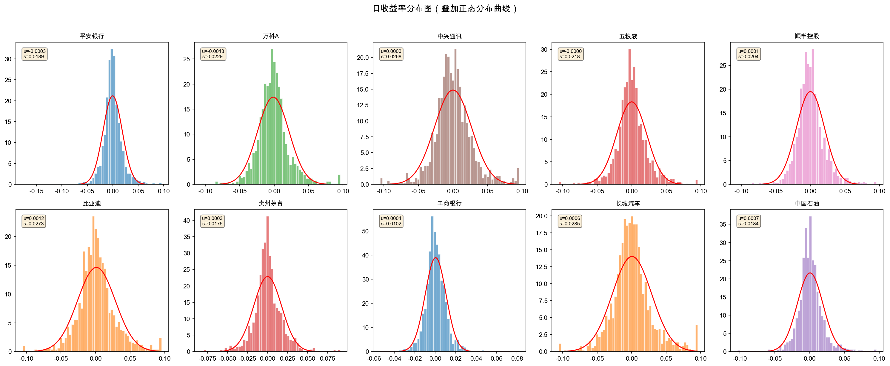
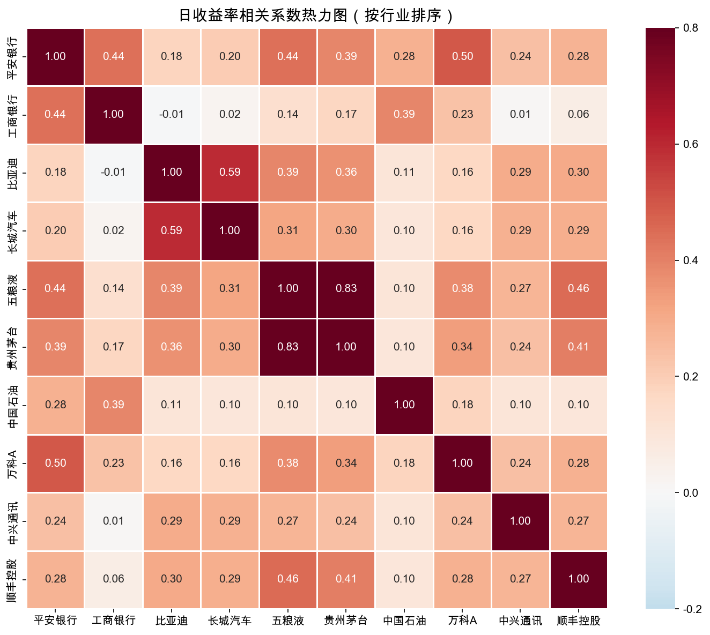
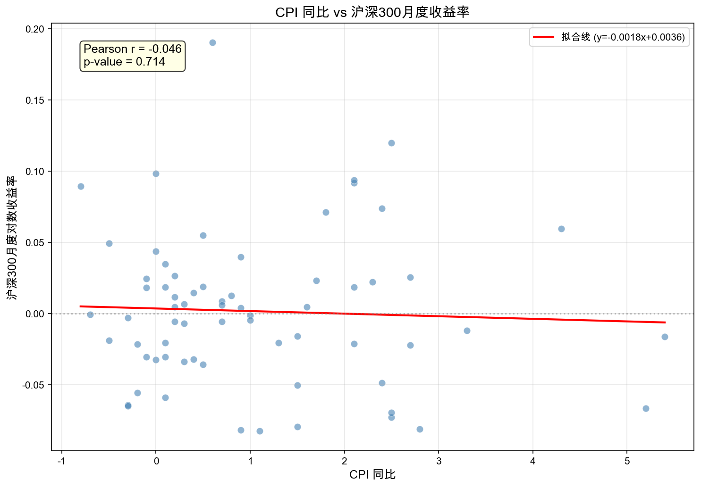
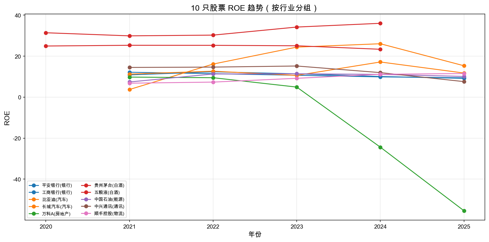

本报告基于项目目录中已经实际运行完成的 01_download.ipynb、02_clean.ipynb 与 03_analysis.ipynb 输出结果撰写，覆盖数据说明、清洗过程、描述性统计、图表解读、CAPM 回归结果与结论。
本项目选择了 10 只 A 股股票，覆盖 7 个行业，并下载了对应的后复权日度行情。指数方面选择沪深 300 作为 CAPM 的市场基准，并增加中证 500 作为风格对照。宏观指标使用 CPI 同比与 M2 同比，财务指标使用 ROE 与资产负债率。
从实际下载结果看，10 只股票全部成功下载，每只股票均为 1512 条记录；两只指数也均为 1512 条记录。宏观和财务数据同样下载成功，财务数据最终整理为 100 条长格式记录。
本次清洗首先对 10 只股票逐表检查缺失值、日期格式、数值类型、重复值与异常波动。实际运行结果显示，原始日度行情数据质量较高：没有缺失值，没有重复行，也没有单日绝对对数收益率超过 20% 的极端记录。
之后，项目将 10 只股票的收盘价转换为宽表，宽表形状为 (1512, 10)；再通过 pd.melt 转换为长表，形状为 (15120, 3)，说明结构转换没有发生行数丢失。个股与沪深 300 指数按日期进行 left join 时也完全对齐，合并前后均为 15120 行，指数列没有缺失。
在存储格式对比中，stock_clean.csv 读取耗时约 0.006 秒、文件大小约 1734.4 KB，而 stock_clean.parquet 读取耗时约 0.001 秒、文件大小约 885.7 KB。即便在 1.5 万行左右的数据规模下，Parquet 也已经体现出明显的效率与体积优势。
data/combined/combined_data.csv 中的 cpi 列共有 13730 行非缺失值，仅有 1390 行缺失；这些缺失主要集中在 2025-09 至 2026-04，对应股票样本时间已经超出当前 CPI 数据的可用月份范围。收益和风险在样本股票之间分化明显。比亚迪年化均值最高，达到 31.44%，中国石油和长城汽车也保持了较高的年化收益；万科A则以 -31.52% 的年化均值和 -86.10% 的最大回撤成为样本中最弱的一只股票。波动率方面，汽车和科技股显著高于银行股，其中长城汽车、比亚迪和中兴通讯的年化波动率都超过 40%，而工商银行仅为 16.27%。
| 股票 | 行业 | 年化均值 | 年化波动率 | 偏度 | 峰度 | 最大回撤 |
|---|---|---|---|---|---|---|
| 平安银行(000001) | 银行 | -6.49% | 29.94% | -0.192 | 8.603 | -62.35% |
| 万科A(000002) | 房地产 | -31.52% | 36.41% | 0.654 | 3.257 | -86.10% |
| 中兴通讯(000063) | 通讯 | 0.14% | 42.62% | 0.309 | 2.482 | -61.87% |
| 五粮液(000858) | 白酒 | -1.15% | 34.57% | 0.087 | 3.308 | -66.09% |
| 顺丰控股(002352) | 物流 | 1.71% | 32.46% | 0.376 | 3.539 | -70.77% |
| 比亚迪(002594) | 汽车 | 31.44% | 43.32% | 0.302 | 2.088 | -52.54% |
| 贵州茅台(600519) | 白酒 | 6.66% | 27.72% | 0.262 | 3.606 | -47.48% |
| 工商银行(601398) | 银行 | 9.66% | 16.27% | 0.458 | 5.852 | -20.20% |
| 长城汽车(601633) | 汽车 | 15.02% | 45.23% | 0.449 | 2.117 | -70.38% |
| 中国石油(601857) | 能源 | 16.91% | 29.27% | 0.221 | 5.178 | -32.47% |

图 1 显示，样本期内最突出的赢家是比亚迪，累计回报约 558.76%；中国石油和长城汽车也分别录得约 175.70% 和 146.12% 的累计涨幅。相对地，万科A累计回报约 -84.89%，平安银行和五粮液也分别出现 -32.22% 和 -6.68% 的负收益，行业景气差异非常明显。
沪深 300 的走势整体居中，既没有像比亚迪那样出现极端上涨，也不像万科A那样持续下挫，因此它作为 CAPM 市场基准是合理的。该图说明，单只股票的长期表现很大程度上受行业周期和公司基本面驱动。

从分布宽度看，工商银行的日收益率最集中，说明其价格波动更平稳；比亚迪、长城汽车和中兴通讯的分布则更宽，对应更高的日频风险。多数股票的偏度和峰度都偏离正态分布，显示出尖峰厚尾特征。
这意味着如果后续采用正态分布假设来衡量风险，可能会低估尾部波动。对金融市场数据而言，这种偏离正态的现象非常常见，也解释了为何最大回撤与波动率往往需要结合起来看。

热力图显示，行业内联动最强的是白酒板块，其中五粮液与贵州茅台的相关系数高达 0.835；汽车板块内部的比亚迪与长城汽车相关系数也达到 0.595。相比之下，比亚迪与工商银行的相关系数仅约 -0.005，几乎不相关。
这个结果说明，按行业做资产配置具有明显意义。同行业股票常常受到类似的景气和资金风格驱动，而跨行业配置则有助于分散非系统性风险。

本次样本中，CPI 同比与沪深 300 月度收益率成功匹配 67 个月，Pearson 相关系数约为 -0.046，仅呈现极弱负相关。散点分布较为分散，拟合线斜率也接近于零，说明单独使用 CPI 同比很难解释市场月度涨跌。
这并不意味着宏观变量无效，而更可能说明 CPI 对股票市场的影响需要与增长、流动性、政策预期等变量共同考察。宏观指标与资本市场之间通常存在时滞和非线性关系。

白酒行业的盈利能力最强且稳定。贵州茅台 2020-2024 年 ROE 从 31.41% 升至 36.02%，均值约 32.36%；五粮液长期维持在 23%-25% 区间。相比之下，万科A的 ROE 从 2021 年的 9.78% 快速下滑到 2025 年的 -55.42%，行业压力非常明显。
汽车行业则体现出高成长带来的盈利弹性。比亚迪 ROE 从 2021 年的 3.73% 快速升至 2024 年的 26.05%，虽然 2025 年回落到 15.31%，但整体仍明显高于扩张初期水平。
CAPM 估计使用沪深 300 作为市场组合，无风险利率统一按年化 2.0% 折算为日频。回归结果显示，股票对市场组合的敏感度存在明显差异，其中五粮液、比亚迪、中兴通讯和长城汽车的 Beta 明显高于 1，而工商银行和中国石油的 Beta 明显低于 1。
| 股票 | 行业 | Alpha | Alpha p值 | Beta | Beta 95% CI | R² |
|---|---|---|---|---|---|---|
| 平安银行(000001) | 银行 | -0.000316 | 0.4207 | 0.9357 | [0.8709, 1.0005] | 0.3470 |
| 万科A(000002) | 房地产 | -0.001308 | 0.0097 | 1.0012 | [0.9178, 1.0846] | 0.2687 |
| 中兴通讯(000063) | 通讯 | -0.000046 | 0.9363 | 1.2432 | [1.1479, 1.3386] | 0.3024 |
| 五粮液(000858) | 白酒 | -0.000096 | 0.8084 | 1.2953 | [1.2297, 1.3608] | 0.4989 |
| 顺丰控股(002352) | 物流 | 0.000008 | 0.9857 | 0.8754 | [0.8005, 0.9502] | 0.2584 |
| 比亚迪(002594) | 汽车 | 0.001197 | 0.0403 | 1.2811 | [1.1848, 1.3775] | 0.3108 |
| 贵州茅台(600519) | 白酒 | 0.000207 | 0.5381 | 0.9781 | [0.9226, 1.0335] | 0.4424 |
| 工商银行(601398) | 银行 | 0.000309 | 0.2257 | 0.2220 | [0.1799, 0.2641] | 0.0662 |
| 长城汽车(601633) | 汽车 | 0.000543 | 0.3942 | 1.1871 | [1.0818, 1.2924] | 0.2447 |
| 中国石油(601857) | 能源 | 0.000602 | 0.1832 | 0.4699 | [0.3952, 0.5446] | 0.0916 |
在 Alpha 显著性方面，比亚迪的 Alpha 为正且在 5% 水平上显著，说明其超额收益不完全由市场风险暴露解释；万科A 的 Alpha 为负且显著，说明其表现持续弱于 CAPM 的基准预测。其他股票的 Alpha 大多不显著，表明单因子 CAPM 对这些股票的解释更多集中于 Beta 而非 Alpha。
从回归拟合优度看，R² 最高的是五粮液（0.4989），最低的是工商银行（0.0662）。这意味着五粮液与市场风格联动更强，而工商银行的价格波动更多受银行板块自身逻辑、分红属性和利率环境影响，单因子市场模型难以充分解释。
本次项目已经完成了从数据下载、清洗、存储到分析展示的完整流程，整体结构符合课程作业对“可复现数据处理流程”的要求。样本结果表明，股票表现的差异主要由行业景气、风险弹性和公司盈利能力共同决定：比亚迪代表了高成长行业在样本期内的显著超额收益，而万科A则集中体现了地产下行周期的压力。
从方法层面看，CSV 与 Parquet 的对比说明数据存储格式会直接影响后续分析效率；热力图与 CAPM 结果则说明行业特征和市场因子都能解释股票收益的部分差异。修复 CPI 合并问题后，综合表已经具备更完整的宏观信息，后续如果继续扩展，可以直接在现有基础上开展宏观因子回归或多因子模型分析。